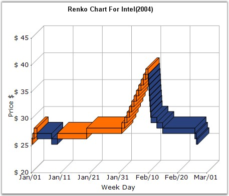

Renko charting method is thought to have acquired its name from "renga" which is the Japanese word for bricks. Renko Charts were introduced by Steve Nison. Renko (Bricks) are drawn equal in size for a determined amount. A brick is drawn in the direction of the prior move only if prices move by a minimum amount. If prices change by the determined amount or more, a new brick is drawn. If prices change by less than the determined amount (specified by ReversalAmount), the new price is ignored. The default value of ReversalAmount is 1.
If the new closing price penetrates the previous bricks closing price in the opposite direction a trend reversal highlighted by the change in color of the bricks happens. Use the PriceUpColor to indicate bullish trend and PriceDownColor to indicate bearish trend.
Since a Renko chart isolates the underlying trends by filtering out the minor ups and downs, Renko charts are excellent in determining support and resistance levels.

Figure 76: Chart displaying Renko Series
Chart Details
|
Details | |
|
Number of Y values per point |
1 |
|
Number of Series |
One |
|
Cannot be Combined with |
Pie, Bar |
Renko series can be added to the chart using the following code.
|
[C#]
// Create chart series and add data points into it. ChartSeries series = this.ChartWebControl1.Model.NewSeries ("Series Name",ChartSeriesType.Renko); series.Points.Add (0, 1); series.Points.Add (1, 3); series.Points.Add (2, 4); series.ReversalAmount = 1.0;
// Add the series to the chart series collection. this.ChartWebControl1.Series.Add (series); |
|
[VB.NET]
' Create chart series and add data points into it. Dim series As ChartSeries = Me.ChartWebControl1.Model.NewSeries ("Series Name",ChartSeriesType.Renko) series.Points.Add (0, 1) series.Points.Add (1, 3) series.Points.Add (2, 4) series.ReversalAmount = 1.0
' Add the series to the chart series collection. Me.ChartWebControl1.Series.Add (series) |